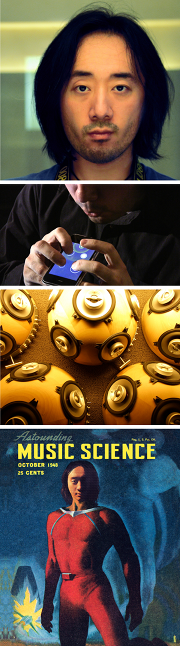

|  |
Ge Wang | 王戈
professor | designer | researcher | speaker
Associate Professor CCRMA | Department of Music (also of Computer Science, by Courtesy) Senior Fellow & Associate Director, Stanford HAI Stanford University
(a MusiComic Manifesto) | book site | mirror site research selected publications | projects | press clippings chuck | ocarina | slork | vr | ai | sndpeek | my research group
teaching (on leave 2024-2025; see list of all courses) music256a/cs476a: art of design (fall 2023) music356/cs470: music and AI (winter 2024) music220b: compositional algorithms (winter 2024) music128/cs170: stanford laptop orchestra (spring 2024) music228 stanford VR orchestra (spring 2024) interaction design + artful product design Smule Co-founder + Chief Creative (until 2013) ah, the great outdoors! John Muir Trail (documentary) | On the Devil's Road office: Knoll 212 email: ge /at/ ccrma.stanford.edu online: @gewang | linkedin | instagram video: youtube | vimeo | tech-hike-art-life photo: all sets | stream i come from here. |